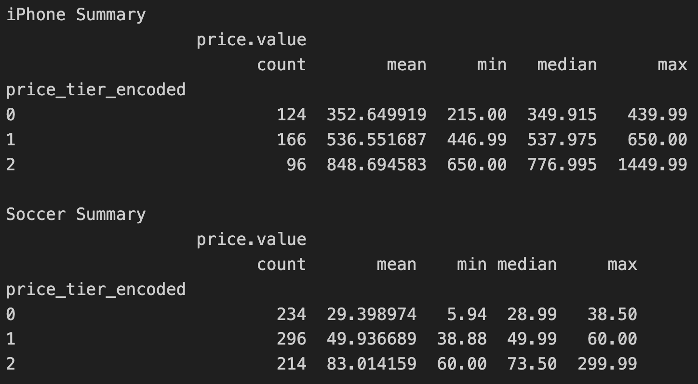
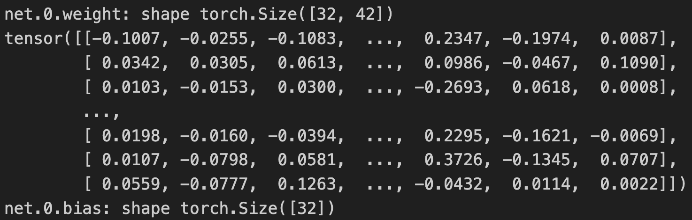
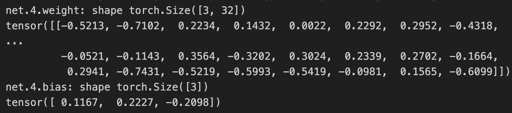
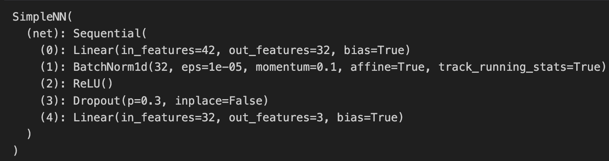
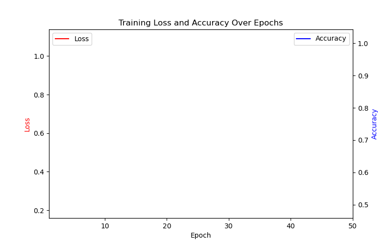
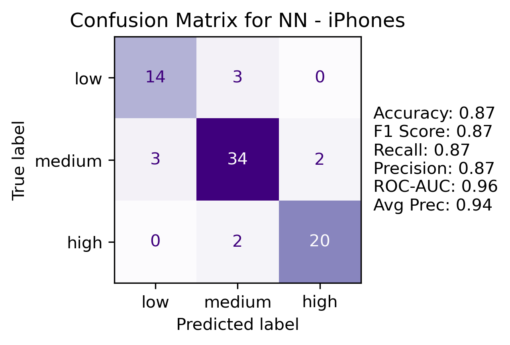
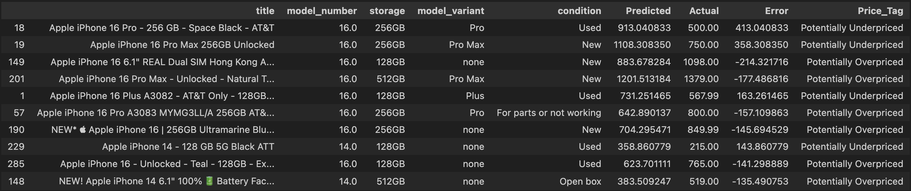
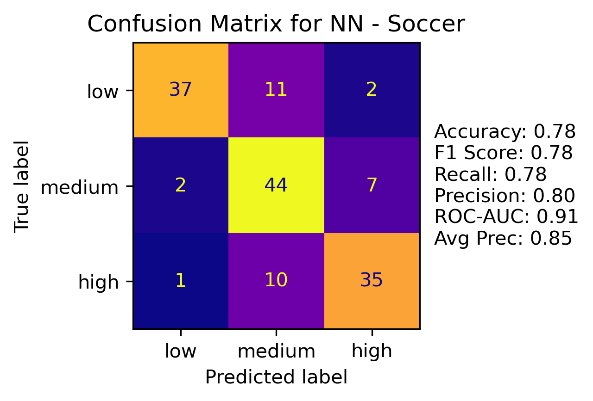
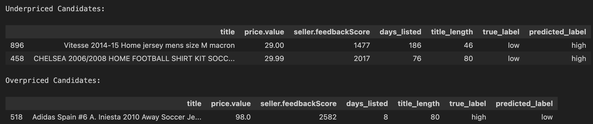
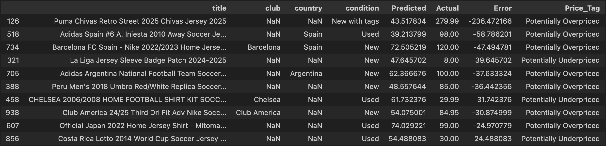

Neural Networks are a sophisticated, supervised machine learning methods that loosely mimic activity in the human brain. Neural nets connect nodes with edges; inputs to each layer are parameters that are transformed using a non-linear activation function, like sigmoid or ReLU, and outputs then go to the next layer. The inputs are adjusted by weights which are learned during training.
Neural nets can be used for both classification and regression problems. Both types were used in the following analysis.
Pytorch was used for all modeling.
Data files are found here.
Similar to other supervised methods, a training and testing set were split before model building. Another split of the training set, called the validation set, was created as well, which was used during training to assess different hyperparameters like number of layers, learning rate, etc., similar to k-fold cross-validation. Then, the final model (based on best performance during training) was trained on the combined train/validation set, and then evaluated on the test set. For classification model, accuracy was used as the evaluation metric. For the regression model, RMSE (root mean squared error) was used as the metric.
RMSE = \(\displaystyle \sqrt{\sum_{i=1}^n \frac{(\hat{y}_i-y_i)^2}{n}}\)
Unlike SVM or unsupervised clustering, which depends on vector distance, neural nets can use other types of features like binary or one-hot-encoded categorical features (distance in these cases is not meaningful). The continuous numerical features were scaled and then binary and OHE categorical features were included to create a large feature base from which the model can learn.
Pytorch uses a torch.tensor data type for its main data structure. Then, a TensorDataset and DataLoader are needed to run the models. The TensorDatasets wrap the feature and response tensors into an object. Then, the DataLoader creates an iterable over the TensorDataset which helps with batching and shuffling as needed in training.
A link to the full code for this analysis is found here.
Pytorch was used. A simple NN class as seen below was used; the output layer should be modified depending on if it’s a classification or regression task.
class SimpleNN(nn.Module):
def __init__(self, input_dim, units, dropout, n_layers, num_classes):
super(SimpleNN, self).__init__()
layers = []
# First layer
layers.append(nn.Linear(input_dim, units))
layers.append(nn.BatchNorm1d(units))
layers.append(nn.ReLU())
layers.append(nn.Dropout(dropout))
# Hidden layers
for _ in range(n_layers - 1):
layers.append(nn.Linear(units, units))
layers.append(nn.BatchNorm1d(units))
layers.append(nn.ReLU())
layers.append(nn.Dropout(dropout))
# Output layer
layers.append(nn.Linear(units, num_classes)) #update for regression
self.net = nn.Sequential(*layers)
def forward(self, x):
return self.net(x)
Then, a training and validation function was created which returned validation set results after looping through a parameter grid like this one:
param_grid = {
'units': [32, 64],
'dropout': [0.3, 0.4, 0.5],
'learning_rate': [0.0005, 0.001, 0.005, 0.01],
'n_layers': [1, 2, 3]
}
Units are the number of neurons per layer and can handle more complex data, but could also lead to overfitting. The dropout rate randomly chooses a percentage of neurons to set to zero during training to prevent overfitting. The learning rate measures the size of the steps the optimizer uses to update weights after each batch. The number of layers represents the number of hidden layers in the model.
The best model based on loss was then re-trained on the combined train/validation set and then evaluated on the test set (previously unseen data).
An example of a final model is as follows:
final_model = SimpleNN(
input_dim=X_train_tensor_iphone.shape[1],
units=32,
dropout=0.3,
n_layers=2,
num_classes=3)
The softmax function is used in the output layer for probabilities and ReLU is used as the activation function in the hidden layers. For classification tasks cross entropy loss is the criterion; for regression, MSE is used.
The iPhone and Soccer data was analyzed using neural nets. Both classification, using the multi-class pricing tiers of low, medium, high, seen here, and regression. In addition, a baseline multiple linear regression with the same features was created to compare with the regression neural net.
Recall the multi-class pricing tiers, which were also used in decision tree modeling:

As mentioned above, multiple models were trained and validated based on a parameter grid, with the best model selected based on lowest validation loss. Then, the best model hyperparameters were trained on the combined training/validation data, with the following results seen.
Best hyperparams: {'units': 32, 'dropout': 0.3, 'lr': 0.005, 'n_layers': 1, 'val_loss': 0.3963206458476282, 'val_acc': 0.8870967741935484}
Given the large number of parameters (42 input features given the one-hot-encoding) and 32 neurons selected by cross-validation, an example of the NN architecture could not be drawn. The following are the outputs of some of the model parameters after training:
This is the first layer, 42 parameters and 32 neurons.

The output has 3 values for the multi-class classification.

This is the final model architecture.


The above animation shows the loss and accuracy throughout the training epochs. A good model’s loss decreases over time. And accuracy increases. There are cases when these trends reverse, and thus sometimes is it wise to build in a stopping point in your model which stops when loss ceases to decrease.
Here are the last 5 epochs:
Epoch 46, Loss: 0.2081, Accuracy: 0.9318
Epoch 47, Loss: 0.1956, Accuracy: 0.9221
Epoch 48, Loss: 0.2146, Accuracy: 0.9188
Epoch 49, Loss: 0.2127, Accuracy: 0.9156
Epoch 50, Loss: 0.2189, Accuracy: 0.9026

The neural net model performed well on the iPhone data, with 87% accuracy. No mis-classes from the high/low buckets were noted.
A regression model was then built to predict price based on the same features used in the classification task. RMSE was the evaluation metric used on the test set. In addition to a model trained on original price, another model using log price was built to see if there was an improvement in RMSE, which is in the original unit of measure, dollars. After training and predicting on log price, the predictions were then exponentiated back to dollars for comparison.
Original Price - Test RMSE: 94.48
Log Price - Test RMSE (log scale):0.3469
Log Price - Test RMSE (original scale): 209.1262
The model built using the log price was significantly worse than the one using the original price. At this time, it is unclear what is causing the large variance.
The top ten deltas from predicted price to actual price were sorted and reviewed, with some potential flags for overpriced / underpriced.

As a baseline, multiple linear regression models (original and log price) using the same features were created, with the following results:
Adjusted \(R^2\) was strong for both models; with 83.3% and 85% of variance explained by the models, respectively.
Original Price - Test RMSE: 100.3040
Log Price - Test RMSE: 0.1479
Log Price Converted - Test RMSE: 105.1955
Test RMSE for original price was somewhat in-line with the neural net; the log price model MLR model performed significantly better than the NN model. Ultimately, using log price instead of original dollars did not show improvement.
The same procedure for training and validating the NN model was used on the soccer data set.
Best hyperparams: {'units': 64, 'dropout': 0.5, 'lr': 0.005, 'n_layers': 3, 'val_loss': 0.6605579302090556, 'val_acc': 0.6722689075630253}

Overall, the model performed well, with only 3 data points that were mis-classed between high and low.

Some potential under and over priced items were flagged based on the high/low mis-classes. Additional research into these items could be completed to determine if additional flagging of words to be turned into potential features could be done.
The regression neural net model was then trained. Test RMSE was $23.69. Similar to the iPhone data, original price was converted to log scale and then trained. No improvement in RMSE was noted; however, the results were more in-line with the original price than with the iPhone data.
Test RMSE: 23.69
Test RMSE (log scale): 0.3409
Test RMSE (original scale): 25.1927

The top ten price prediction misses were sorted.
Two multiple linear regression models were then trained for comparison using the same features. MLR did not perform well on the soccer data as the RMSE is not better than the standard deviation of the price data, and thus does not offer improvement over using the mean for prediction.
Adj. R-squared (Original): 0.549
Adj. R-squared (Log Price): 0.553
Original Price - Test RMSE: 29.8098
Log Price - Test RMSE: 0.3825
Log Price Converted - Test RMSE: 28.5054
Neural nets offer more flexibility for the eBay listings data as more than just continuous numerical features can be used, unlike other supervised models such as k-nearest neighbors and support vector machines. In addition, neural nets can be used for both multi-class classification and regression, which applied in this case. One needs to be particular about data pre-processing; however, as any NaN fields will cause the model to break (compared with Random Forest which can handle missing data). Given the abundance of non-continuous features, neural networks are a good choice for this data.
Multiple linear regression was also run as a baseline for both the iPhone and Soccer datasets. Interestingly, the neural network and MLR performed in-line with the iPhone data. The MLR models (original price and log price) both had high adjusted \(R^2\) (83.3% and 85%, respectively). The soccer data’s NN models performed better than the MLR. One could suppose that there is an inherent difference in the nature of the data, one more linear and one more flexible, which leads to different models performing differently. Given the flexibility of neural networks, additional adjustments can be made in the future to further refine the models.